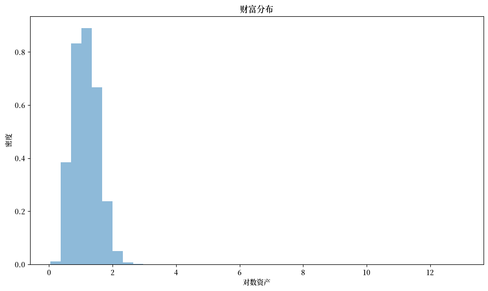
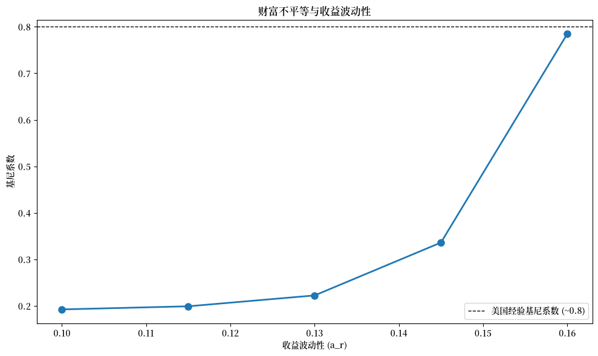
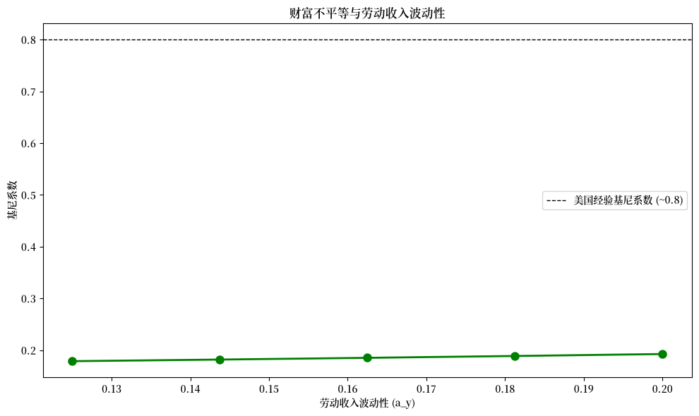

75. 收入波动问题 V：资产随机收益#
GPU
本讲座是在配有GPU的机器上构建的——不过没有GPU也可以运行。
Google Colab 提供带GPU的免费套餐，使用方法如下：
点击右上角的”播放”图标
选择 Colab
将运行时环境设置为包含GPU
除了 Anaconda 中的内容外，本讲座还需要以下库：
!pip install quantecon jax
75.1. 概述#
在本讲座中，我们继续研究 收入波动问题 III：内生网格法 中描述的收入波动问题。
之前假设利率是固定的，但现在我们允许资产收益随状态变化。
这符合大多数拥有正资产的家庭面临资本收入风险这一事实。
有人认为，建模资本收入风险对于理解收入和财富的联合分布至关重要（参见，例如，[Benhabib et al., 2015] 或 [Stachurski and Toda, 2019]）。
本文提出的家庭储蓄模型的理论性质在 [Ma et al., 2020] 中有详细分析。
在计算方面，我们结合时间迭代和内生网格方法来快速准确地求解模型。
我们需要以下导入：
import matplotlib.pyplot as plt
import matplotlib as mpl
FONTPATH = "fonts/SourceHanSerifSC-SemiBold.otf"
mpl.font_manager.fontManager.addfont(FONTPATH)
plt.rcParams['font.family'] = ['Source Han Serif SC']
import numpy as np
import quantecon as qe
import jax
import jax.numpy as jnp
from jax import vmap
from typing import NamedTuple
from functools import partial
75.2. 模型#
在本节中，我们回顾家庭问题及其最优性结果。
75.2.1. 设定#
家庭选择消费-资产路径 \(\{(c_t, a_t)\}\) 以最大化
受约束于
初始条件 \((a_0, Z_0)=(a,z)\) 视为给定。
与 The Income Fluctuation Problem IV: Transient Income Shocks 唯一的不同之处在于，财富的总收益率 \(\{R_t\}_{t \geq 1}\) 现在允许是随机的。
具体而言，我们假设
其中
\(R\) 和 \(Y\) 是时不变的非负函数，
创新过程 \(\{\zeta_t\}\) 和 \(\{\eta_t\}\) 独立同分布且相互独立，
\(\{Z_t\}_{t \geq 0}\) 是有限集 \(\mathsf Z\) 上的马尔可夫链
令 \(P\) 表示链 \(\{Z_t\}_{t \geq 0}\) 的马尔可夫矩阵。
在下文中，\(\mathbb E_z \hat X\) 表示给定当前值 \(Z = z\) 时下一期值 \(\hat X\) 的期望。
75.2.2. 假设#
我们需要一些限制条件来确保目标 (75.1) 是有限的，并且下面描述的解法能够收敛。
我们还需要确保财富的现值不会增长得太快。
当 \(\{R_t\}\) 是常数时，我们要求 \(\beta R < 1\)。
现在它是随机的，我们要求（参见 [Ma et al., 2020]）
值 \(G_R\) 可以理解为长期（几何）平均总收益率。
为了简化本讲座，我们将假设利率过程是独立同分布的。
在这种情况下，从 \(G_R\) 的定义可以清楚地看出 \(G_R\) 就是 \(\mathbb E R_t\)。
我们在下面的代码中检验条件 \(\beta \mathbb E R_t < 1\)。
最后，我们对非金融收入施加一些常规的技术性限制。
一个相对简单且满足所有这些限制的环境是 [Benhabib et al., 2015] 的独立同分布和 CRRA 环境。
75.2.3. 最优性#
令候选消费政策类 \(\mathscr C\) 的定义如 收入波动问题 III：内生网格法 中所述。
在 [Ma et al., 2020] 中证明，在所述假设下，
任何满足欧拉方程的 \(\sigma \in \mathscr C\) 都是最优政策，且
在 \(\mathscr C\) 中恰好存在一个这样的政策。
在当前设定中，欧拉方程的形式为
（直觉和推导与 收入波动问题 III：内生网格法 中的内容类似。）
我们再次使用时间迭代来求解欧拉方程，使用与欧拉方程 (75.5) 相匹配的 Coleman–Reffett 算子 \(K\) 进行迭代。
75.3. 求解算法#
75.3.1. 时间迭代算子#
我们对候选类 \(\sigma \in \mathscr C\) 消费政策的定义与 收入波动问题 III：内生网格法 中的定义相同。
对于固定的 \(\sigma \in \mathscr C\) 和 \((a,z) \in \mathbf S\)，函数 \(K\sigma\) 在 \((a,z)\) 处的值 \(K\sigma(a,z)\) 定义为满足以下方程的 \(\xi \in (0,a]\)
\(K\) 背后的思想是，从定义可以看出，\(\sigma \in \mathscr C\) 满足欧拉方程当且仅当对于所有 \((a, z) \in \mathbf S\) 都有 \(K\sigma(a, z) = \sigma(a, z)\)。
这意味着 \(K\) 在 \(\mathscr C\) 中的不动点和最优消费政策完全重合（更多细节参见 [Ma et al., 2020]）。
75.3.2. 收敛性质#
如前所述，我们在 \(\mathscr C\) 上配以如下度量
可以证明
\((\mathscr C, \rho)\) 是一个完备度量空间，
存在一个整数 \(n\) 使得 \(K^n\) 是 \((\mathscr C, \rho)\) 上的压缩映射，且
\(K\) 在 \(\mathscr C\) 中的唯一不动点是 \(\mathscr C\) 中的唯一最优政策。
现在，我们有了一个清晰的路径来成功地逼近最优政策：选择某个 \(\sigma \in \mathscr C\) 然后用 \(K\) 迭代直到收敛（用距离 \(\rho\) 衡量）。
75.3.3. 使用内生网格#
在研究该模型时，我们发现可以通过 内生网格方法 进一步加速时间迭代。
我们将在这里使用相同的方法。
该方法与最优增长模型的方法相同，只是需要记住消费并不总是内部的。
特别是，当资产水平较低时，最优消费可能等于资产。
75.3.3.1. 寻找最优消费#
内生网格方法（EGM）要求我们取一个储蓄值网格 \(s_i\)，其中每个这样的 \(s\) 被解释为 \(s = a - c\)。
对于最低的网格点，我们取 \(s_0 = 0\)。
对于相应的 \(a_0, c_0\) 对，我们有 \(a_0 = c_0\)。
这发生在接近原点的地方，资产较低，家庭消费其所能消费的一切。
虽然有许多解，但我们取 \(a_0 = c_0 = 0\)，这固定了原点处的政策，有助于插值。
对于 \(s > 0\)，根据定义，我们有 \(c < a\)，因此消费是内部的。
因此 (75.5) 的最大值部分消失，我们在每个 \(s_i\) 处求解
75.3.3.2. 迭代#
一旦我们得到 \(\{s_i, c_i\}\) 对，内生资产网格通过 \(a_i = c_i + s_i\) 获得。
另外，在上面的讨论中我们固定了 \(z \in \mathsf Z\)，所以可以将其与 \(a_i\) 配对。
通过在每个 \(z\) 上对 \(\{a_i, c_i\}\) 插值，就可以得到政策 \((a,z) \mapsto \sigma(a,z)\) 的近似。
在下面的内容中，我们使用线性插值。
75.4. 实现#
以下是以 NamedTuple 表示的模型。
class IFP(NamedTuple):
"""
一个 NamedTuple，使用 JAX 存储收入波动问题的基本参数。
"""
γ: float
β: float
P: jnp.ndarray
a_r: float
b_r: float
a_y: float
b_y: float
s_grid: jnp.ndarray
η_draws: jnp.ndarray
ζ_draws: jnp.ndarray
def create_ifp(
γ=1.5, # 效用参数
β=0.96, # 折现因子
P=jnp.array([(0.9, 0.1), # Z 的默认马尔可夫链
(0.1, 0.9)]),
a_r=0.16, # R 冲击中的波动率项
b_r=0.0, # R 冲击的均值偏移
a_y=0.2, # Y 冲击中的波动率项
b_y=0.5, # Y 冲击的均值偏移
shock_draw_size=100, # 用于蒙特卡洛
grid_max=100, # 外生网格最大值
grid_size=100, # 外生网格大小
seed=1234 # 随机种子
):
"""
使用给定参数创建一个 IFP 实例。
"""
# 假设 {R_t} 独立同分布且 ln R ~ N(b_r, a_r)，检验稳定性
ER = np.exp(b_r + a_r**2 / 2)
assert β * ER < 1, "稳定性条件不成立。"
# 使用 JAX 生成随机抽取
key = jax.random.key(seed)
subkey1, subkey2 = jax.random.split(key)
η_draws = jax.random.normal(subkey1, (shock_draw_size,))
ζ_draws = jax.random.normal(subkey2, (shock_draw_size,))
s_grid = jnp.linspace(0, grid_max, grid_size)
return IFP(
γ, β, P, a_r, b_r, a_y, b_y, s_grid, η_draws, ζ_draws
)
def u_prime(c, γ):
"""边际效用"""
return c**(-γ)
def u_prime_inv(c, γ):
"""边际效用的逆函数"""
return c**(-1/γ)
def R(z, ζ, a_r, b_r):
"""资产的总收益率"""
return jnp.exp(a_r * ζ + b_r)
def Y(z, η, a_y, b_y):
"""劳动收入"""
return jnp.exp(a_y * η + (z * b_y))
这是使用 JAX 的 Coleman-Reffett 算子：
def K(
c_in: jnp.array, # c_in[i, z] = a_in[i, z] 处的消费
a_in: jnp.array, # a_in[i, z] 是资产网格
ifp: IFP
):
"""
使用 JAX 结合内生网格方法的收入波动问题的
Coleman--Reffett 算子。
"""
# 从 ifp 中提取参数
γ, β, P, a_r, b_r, a_y, b_y, s_grid, η_draws, ζ_draws = ifp
n = len(P)
def compute_expectation(s, z):
def inner_expectation(z_hat):
def compute_term(η, ζ):
R_hat = R(z_hat, ζ, a_r, b_r)
Y_hat = Y(z_hat, η, a_y, b_y)
a_val = R_hat * s + Y_hat
# 对消费进行插值
c_interp = jnp.interp(a_val, a_in[:, z_hat], c_in[:, z_hat])
mu = u_prime(c_interp, γ)
return R_hat * mu
# 对所有冲击组合进行向量化
η_grid, ζ_grid = jnp.meshgrid(η_draws, ζ_draws, indexing='ij')
terms = vmap(vmap(compute_term))(η_grid, ζ_grid)
return P[z, z_hat] * jnp.mean(terms)
# 对 z_hat 状态求和
Ez = jnp.sum(vmap(inner_expectation)(jnp.arange(n)))
return u_prime_inv(β * Ez, γ)
# 对 s_grid 和 z 进行向量化
compute_exp_v1 = vmap(compute_expectation, in_axes=(None, 0))
compute_exp_v2 = vmap(compute_exp_v1, in_axes=(0, None))
c_out = compute_exp_v2(s_grid, jnp.arange(n))
# 计算内生资产网格
a_out = s_grid[:, None] + c_out
# 在 (0, 0) 处固定消费-资产对
c_out = c_out.at[0, :].set(0)
a_out = a_out.at[0, :].set(0)
return c_out, a_out
下一个函数使用 JAX 通过时间迭代求解最优消费政策的近似：
@jax.jit
def solve_model(
ifp: IFP,
c_init: jnp.ndarray, # 内生网格上 σ 的初始猜测
a_init: jnp.ndarray, # 初始内生网格
tol: float = 1e-5,
max_iter: int = 1000
) -> jnp.ndarray:
" 使用 EGM 的时间迭代求解模型。 "
def condition(loop_state):
c_in, a_in, i, error = loop_state
return (error > tol) & (i < max_iter)
def body(loop_state):
c_in, a_in, i, error = loop_state
c_out, a_out = K(c_in, a_in, ifp)
error = jnp.max(jnp.abs(c_out - c_in))
i += 1
return c_out, a_out, i, error
i, error = 0, tol + 1
initial_state = (c_init, a_init, i, error)
final_loop_state = jax.lax.while_loop(condition, body, initial_state)
c_out, a_out, i, error = final_loop_state
return c_out, a_out
现在我们可以创建一个实例并使用 JAX 求解模型：
ifp = create_ifp()
设置初始条件：
# 初始猜测 σ = 消费所有资产
k = len(ifp.s_grid)
n = len(ifp.P)
σ_init = jnp.empty((k, n))
for z in range(n):
σ_init = σ_init.at[:, z].set(ifp.s_grid)
a_init = σ_init.copy()
让我们用 JAX 生成一个近似解：
σ_star, a_star = solve_model(ifp, σ_init, a_init)
让我们再用计时器试一次。
with qe.Timer(precision=8):
σ_star, a_star = solve_model(ifp, σ_init, a_init)
σ_star.block_until_ready()
10.43059778 seconds elapsed
75.5. 模拟#
让我们回到默认模型，研究资产的平稳分布。
我们的计划是让大量家庭向前推进 \(T\) 期，然后绘制资产横截面分布的直方图。
设置 num_households=50_000, T=500。
首先我们编写一个函数，将单个家庭向前模拟，并记录资产的最终值。
该函数接受一对解 c_vec 和 a_vec，将其理解为与给定模型 ifp 相关联的最优政策。
def simulate_household(
key, a_0, z_idx_0, c_vec, a_vec, ifp, T
):
"""
模拟单个家庭 T 期，以逼近资产的平稳分布。
- key 是随机数生成器的状态
- ifp 是 IFP 的一个实例
- c_vec, a_vec 是 ifp 的最优消费政策和内生网格
"""
# 从 ifp 中提取参数
γ, β, P, a_r, b_r, a_y, b_y, s_grid, η_draws, ζ_draws = ifp
n_z = len(P)
# 为消费政策创建插值函数
σ = lambda a, z_idx: jnp.interp(a, a_vec[:, z_idx], c_vec[:, z_idx])
# 向前模拟 T 期
def update(t, state):
a, z_idx = state
# 从 P[z, z'] 中抽取下一期冲击 z'
current_key = jax.random.fold_in(key, 3*t)
z_next_idx = jax.random.choice(current_key, n_z, p=P[z_idx]).astype(jnp.int32)
# 为收入抽取 η 冲击
η_key = jax.random.fold_in(key, 3*t + 1)
η = jax.random.normal(η_key)
# 为收益率抽取 ζ 冲击
ζ_key = jax.random.fold_in(key, 3*t + 2)
ζ = jax.random.normal(ζ_key)
# 计算随机收益率
R_next = R(z_next_idx, ζ, a_r, b_r)
# 计算收入
Y_next = Y(z_next_idx, η, a_y, b_y)
# 更新资产：a' = R' * (a - c) + Y'
a_next = R_next * (a - σ(a, z_idx)) + Y_next
# 返回更新后的状态
return a_next, z_next_idx
initial_state = a_0, z_idx_0
final_state = jax.lax.fori_loop(0, T, update, initial_state)
a_final, _ = final_state
return a_final
现在我们编写一个函数，并行模拟许多家庭。
@partial(jax.jit, static_argnums=(3, 4, 5))
def compute_asset_stationary(
c_vec, a_vec, ifp, num_households=50_000, T=500, seed=1234
):
"""
模拟 num_households 个家庭 T 期，以逼近资产的平稳分布。
返回资产持有量的最终横截面。
- ifp 是 IFP 的一个实例
- c_vec, a_vec 是最优消费政策和内生网格。
"""
# 从 ifp 中提取参数
γ, β, P, a_r, b_r, a_y, b_y, s_grid, η_draws, ζ_draws = ifp
# 从 资产 = 储蓄网格最大值 / 2 开始
a_0_vector = jnp.full(num_households, s_grid[-1] / 2)
# 初始化每个家庭的外生状态
z_idx_0_vector = jnp.zeros(num_households).astype(jnp.int32)
# 对许多家庭进行向量化
key = jax.random.key(seed)
keys = jax.random.split(key, num_households)
# 在 (key, a_0, z_idx_0) 上向量化 simulate_household
sim_all_households = jax.vmap(
simulate_household, in_axes=(0, 0, 0, None, None, None, None)
)
assets = sim_all_households(keys, a_0_vector, z_idx_0_vector, c_vec, a_vec, ifp, T)
return jnp.array(assets)
我们需要一些不平等度量来进行可视化，所以让我们先定义它们：
def gini_coefficient(x):
"""
计算数组 x 的基尼系数。
"""
x = jnp.asarray(x)
n = len(x)
x_sorted = jnp.sort(x)
# 计算基尼系数
cumsum = jnp.cumsum(x_sorted)
a = (2 * jnp.sum((jnp.arange(1, n+1)) * x_sorted)) / (n * cumsum[-1])
return a - (n + 1) / n
def top_share(
x: jnp.array, # 财富值数组
p: float=0.01 # 头部家庭的比例（默认 0.01 表示前 1%）
):
"""
计算前 p 比例家庭所持有的总财富份额。
"""
x = jnp.asarray(x)
x_sorted = jnp.sort(x)
# 前 p% 中的家庭数量
n_top = int(jnp.ceil(len(x) * p))
# 前 p% 持有的财富
wealth_top = jnp.sum(x_sorted[-n_top:])
# 总财富
wealth_total = jnp.sum(x_sorted)
return wealth_top / wealth_total
现在我们调用该函数，生成资产分布并将其可视化：
ifp = create_ifp()
# 提取用于初始化的参数
s_grid = ifp.s_grid
n_z = len(ifp.P)
a_init = s_grid[:, None] * jnp.ones(n_z)
c_init = a_init
c_vec, a_vec = solve_model(ifp, c_init, a_init)
assets = compute_asset_stationary(c_vec, a_vec, ifp, num_households=200_000)
# 为图形计算基尼系数
gini_plot = gini_coefficient(assets)
# 绘制对数财富直方图
fig, ax = plt.subplots(figsize=(10, 6))
ax.hist(jnp.log(assets), bins=40, alpha=0.5, density=True)
ax.set(xlabel='对数资产', ylabel='密度', title="财富分布")
plt.tight_layout()
plt.show()
findfont: Failed to find font weight normal, now using 600.
findfont: Failed to find font weight normal, now using 600.

直方图显示了对数财富的分布。
请记住我们看的是对数值，直方图表明分布有较长的右尾。
下面我们更详细地研究这一点。
75.6. 财富不平等#
让我们通过计算这一现象的一些标准度量来考察财富不平等。
我们还将考察不平等程度如何随利率变化。
75.6.1. 度量不平等#
让我们打印出模拟结果中的基尼系数和前 1% 财富份额：
gini = gini_coefficient(assets)
top1 = top_share(assets, p=0.01)
print(f"基尼系数：{gini:.4f}")
print(f"前 1% 财富份额：{top1:.4f}")
基尼系数：0.7847
前 1% 财富份额：0.7306
最近的数据表明
美国财富的基尼系数约为 0.8
前 1% 的财富份额超过 0.3
我们具有随机收益的模型生成的基尼系数接近经验值，这表明资本收入风险是财富不平等的一个重要因素。
然而，前 1% 的财富份额过大。
我们的模型需要适当的校准和进一步的工作——我们暂时搁置这些任务。
75.7. 练习#
练习 75.1
绘制基尼系数如何随资产收益的波动性变化。
具体而言，计算 a_r 从 0.10 到 0.16 变化时的基尼系数（至少使用 5 个不同的值），并绘制结果图。
这告诉我们资本收入风险与财富不平等之间的关系是什么？
解答 练习 75.1
我们对不同的 a_r 值进行循环，为每个值求解模型，模拟财富分布，并计算基尼系数。
# 需要探索的 a_r 值范围
a_r_vals = np.linspace(0.10, 0.16, 5)
gini_vals = []
print("正在计算不同收益波动性下的基尼系数...\n")
for a_r in a_r_vals:
print(f"a_r = {a_r:.3f}...", end=" ")
# 用这个 a_r 值创建模型
ifp_temp = create_ifp(a_r=a_r, grid_max=100)
# 求解模型
s_grid_temp = ifp_temp.s_grid
n_z_temp = len(ifp_temp.P)
a_init_temp = s_grid_temp[:, None] * jnp.ones(n_z_temp)
c_init_temp = a_init_temp
c_vec_temp, a_vec_temp = solve_model(
ifp_temp, c_init_temp, a_init_temp
)
# 模拟家庭
assets_temp = compute_asset_stationary(
c_vec_temp, a_vec_temp, ifp_temp, num_households=200_000
)
# 计算基尼系数
gini_temp = gini_coefficient(assets_temp)
gini_vals.append(gini_temp)
print(f"基尼系数 = {gini_temp:.4f}")
# 绘制结果图
fig, ax = plt.subplots(figsize=(10, 6))
ax.plot(a_r_vals, gini_vals, 'o-', linewidth=2, markersize=8)
ax.set(xlabel='收益波动性 (a_r)',
ylabel='基尼系数',
title='财富不平等与收益波动性')
ax.axhline(y=0.8, color='k', linestyle='--', linewidth=1,
label='美国经验基尼系数 (~0.8)')
ax.legend()
plt.tight_layout()
plt.show()
正在计算不同收益波动性下的基尼系数...
a_r = 0.100...
基尼系数 = 0.1925
a_r = 0.115...
基尼系数 = 0.1992
a_r = 0.130...
基尼系数 = 0.2225
a_r = 0.145...
基尼系数 = 0.3362
a_r = 0.160...
基尼系数 = 0.7847

图中显示，财富不平等（用基尼系数衡量）随收益波动性的增大而增加。
这表明资本收入风险是财富不平等的一个关键驱动因素。
当收益波动性更大时，经历了一系列高收益的幸运家庭会积累远多于不幸家庭的财富，从而导致财富分布的不平等程度加剧。
练习 75.2
绘制基尼系数如何随劳动收入的波动性变化。
具体而言，计算 a_y 从 0.125 到 0.20 变化时的基尼系数，并绘制结果图。在本练习中设置 a_r=0.10。
这告诉我们劳动收入风险与财富不平等之间的关系是什么？通过改变劳动收入波动性，我们能否达到与改变收益波动性同样程度的不平等上升？
解答 练习 75.2
我们对不同的 a_y 值进行循环，为每个值求解模型，模拟财富分布，并计算基尼系数。
# 需要探索的 a_y 值范围
a_y_vals = np.linspace(0.125, 0.20, 5)
gini_vals_y = []
print("正在计算不同劳动收入波动性下的基尼系数...\n")
for a_y in a_y_vals:
print(f"a_y = {a_y:.3f}...", end=" ")
# 用这个 a_y 值和 a_r=0.10 创建模型
ifp_temp = create_ifp(a_y=a_y, a_r=0.10, grid_max=100)
# 求解模型
s_grid_temp = ifp_temp.s_grid
n_z_temp = len(ifp_temp.P)
a_init_temp = s_grid_temp[:, None] * jnp.ones(n_z_temp)
c_init_temp = a_init_temp
c_vec_temp, a_vec_temp = solve_model(
ifp_temp, c_init_temp, a_init_temp
)
# 模拟家庭
assets_temp = compute_asset_stationary(
c_vec_temp, a_vec_temp, ifp_temp, num_households=200_000
)
# 计算基尼系数
gini_temp = gini_coefficient(assets_temp)
gini_vals_y.append(gini_temp)
print(f"基尼系数 = {gini_temp:.4f}")
# 绘制结果图
fig, ax = plt.subplots(figsize=(10, 6))
ax.plot(a_y_vals, gini_vals_y, 'o-', linewidth=2, markersize=8, color='green')
ax.set(xlabel='劳动收入波动性 (a_y)',
ylabel='基尼系数',
title='财富不平等与劳动收入波动性')
ax.axhline(y=0.8, color='k', linestyle='--', linewidth=1,
label='美国经验基尼系数 (~0.8)')
ax.legend()
plt.tight_layout()
plt.show()
正在计算不同劳动收入波动性下的基尼系数...
a_y = 0.125...
基尼系数 = 0.1787
a_y = 0.144...
基尼系数 = 0.1818
a_y = 0.163...
基尼系数 = 0.1852
a_y = 0.181...
基尼系数 = 0.1887
a_y = 0.200...
基尼系数 = 0.1925

图中显示，财富不平等随劳动收入波动性的增大而增加，但这一效应比收益波动性的效应要弱得多。
比较这两个练习：
当收益波动性（
a_r）从 0.10 变化到 0.16 时，基尼系数从约 0.20 急剧上升到 0.79当劳动收入波动性（
a_y）以类似的百分比幅度从 0.125 变化到 0.20 时，基尼系数虽有增加，但增幅小得多
这表明，相较于劳动收入风险，资本收入风险是财富不平等更重要的驱动因素。
其直觉在于，财富积累会随时间产生复利效应：经历了有利资产收益的家庭可以将这些收益进行再投资，从而实现指数级增长。
相比之下，劳动收入冲击虽然会影响当期消费和储蓄，但对财富积累不具有同样的复利效应。